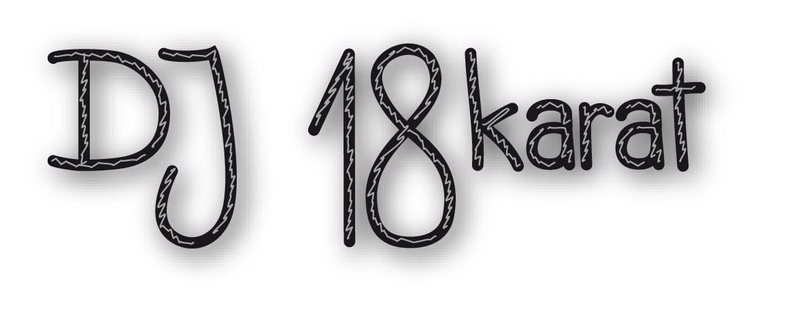

GEOSchoolDay 2016 Sek  &
& 
Bern, 8./9. Juni 2016
Ziel des GEOSchool Days
Das übergeordnete Ziel des GEOSchool Days ist, das Thema Geoinformation Jugendlichen spielerisch näher zu bringen und den Nachwuchs für die GIS-Branche zu fördern. Dafür wird je ein Tagesprogramm für Gymnasien/Kantonsschulen auf Sekundarstufe II (max. 150 Schülerinnen und Schüler (SuS) zwischen 16 und 19 Jahren) und auf Sekundarstufe I (max. 150 SuS zwischen 13 und 15 Jahren) angeboten.
Programmangebot
Zum Programm stehen folgende Angebote zur Verfügung:
Marktplatz im GEOSchool Forum
Der Marktplatz hat den Zweck zur Geo-/GIS-Weiterbildung für Lehrpersonen sowie der Bekanntmachung dieses Angebots für Messeteilnehmer.
Corner im GEOSchool Forum
Der GEOSchool Corner hat den Zweck einer tabletbasierten Gamerecke für die SuS.
Outdoor Games auf dem Vorplatz/Allmend
Die Outdoor Games sind GPS- oder vermessungsbasierte Games, die nur im Freien durchführbar sind.
MegaGEOGame in der Stadt Bern
Das MegaGEOGame wird mit allen SuS klassenweise in der Stadt Bern durchgeführt. Es beinhaltet einzelne Missionen mit dem didaktischen Ansatz des problem-based Learning. Diese Missionen können methodisch stark variieren und zum Beispiel als Schnitzeljagd, Quiz/Wissen, Strategie, Daten erfassen, Geschicklichkeit, Social Competence umgesetzt sein. Alle Missionen sind kompetitiv und werden mittels Punkte sammeln (klassenweise) durchgeführt. Die letzte Mission wird an der Schlussveranstaltung gemeinsam durchgeführt.
Schlussveranstaltung im GEOSchool Forum
Alle Schülerinnen und Schüler kommen je am Ende des Tages alle zusammen in das Forum und absolvieren die letzte „Mission“ gemeinsam durch. Anschliessend findet eine Rangverkündigung statt und die Siegerklassen werden „megamässig“ prämiert. Natürlich gibt es auch ein GEOSchoolDay-Foto!
Postersession
Im Rahmen der allgemeinen Postersession des GEOSummit-Kongresses stellt das GEOSchool Forum über Mittag (12.00 – 14.00 Uhr) den Platz zur Verfügung.
Live Music by DJ 18KARAT im GEOSchool Forum
 Der GEOSchool Day in the Mix for groovin' People. Für smoothige und pumpige Beats und Klänge sorgt DJ 18KARAT im GEOSchool Forum.
Programmablauf
Einrichten der Stände des Marktplatzes und der Outdoorgames
Eintreffen und Registrieren der Klassen im GEOSchoolForum, ab 08.50 Einweisung der Klassen an vorgesehenen Posten
Schulklassen melden sich beim ersten Posten indoor (Indoorgames) oder outdoor (Outdoorgames)
und
14:35-16:00
Marktplatz und Games von Schweizer Bildungsorganisationen
Marktplatz
Indoorgames
Outdoorgames
GLOBE Swiss
GLOBE Schweiz bietet ausserschulische Lernaktivitäten im Bereich Science Education an. Schulklassen aller Stufen erforschen mit wissenschaftlichen Methoden aktuelle Themen wie Klimawandel, Biodiversität und Gewässergüte. Die Schülerdaten können in vielen Fällen mit ArcGIS online erfasst, analysiert und visualisiert werden. Alle Infos unter www.globe-swiss.ch.
Kontakt: Eric Wyss
Tablet Games
Megapolis, LEGO® Creator, Block Free Builder 3D, USA-, Europe-, Africa Map Puzzle, 2D und 3D Labyritnhs, Find the country und viele neue Apps frisch aus dem App Store...
Wurfweitenmessung
Alle Personen einer Gruppe werde einen Gegenstand werfen, die erreichte Distanz schätzen und diese mit einem präzisen Distanz- und Winkelmessgerät (Tachymeter) bestimmen. Es wird sich zeigen, wie genau die Distanz ohne zusätzliche Hilfsmittel geschätzt werden konnte. Parallel dazu erfolgt die Vorstellung einer weiteren Messtechnologie.
Kontakt: Michael Zwick
Swiss OpenStreetMap Association
OpenStreetMap eine freie Weltkarte und das grösste Crowdsourcing-Projekt für Geodaten. Alle können mitmachen und an diesem Marktstand erfährt man, wie das geht. Es gibt auch einen Flyer und Tipps zu Online-Quellen. Als spezielle GEOSummit-Aktion, erhält jeder auf Wunsch eine Landkarte mit persönlichem Ausschnitt, ausgedruckt auf wasserfesten Papier im Format A1. Weitere Infos unter www.sosm.ch
Kontakt: Simon Poole
GPS Theater
Das interaktive Montagsmalen für 3D-Denker!
Mit dem Spiel GPS Theater raten die Teilnehmenden indoor per Live-Screen die Figuren, die simultan von Teammitglieder outdoor per GPS-Tracker aufgezeichnet werden. Gutes räumliches Vorstellungsvermögen und viel Kreativität ist gefragt.
Kontakt: Alíz Boér
Kontakt: Christian Sailer
Geochaching
Geoinformationssysteme (GIS), Geographische Informationssysteme oder Räumliche Informationssysteme (RIS) sind Informationssysteme zur Erfassung, Bearbeitung, Organisation, Analyse und Präsentation räumlicher Daten. Geoinformationssysteme umfassen die dazu benötigte Hardware, Software, Daten und Anwendungen.
Kontakt: Andy Born
Digital Earth
Seit 2013 ist die Kantonsschule Solothurn offiziel Digital Earth Centre of Excellence der Schweiz. Die Fachschaft Geographie ist Kompetenzzentrum für geographische Medien und Unterrichtsfragen betreffend Geographischen Informationssystemen (GIS). Aufgrund der erfolgreichen Tätigkeiten der beiden letzten Jahre wurde das Zertifikat bis November 2017 verlängert.
Kontakt: Raymond Treier
Augmented Maps
Mit Augmented Maps steht den Benutzenden eine Erweiterung der analogen Landeskarte 1:25'000 zur Verfügung. Der gewählte Ausschnitt lässt sich als 3D-Oberfläche darstellen, sowohl als Luftbild als auch im Kartenlayout. Mit dieser Technologie lassen sich Papierkarten durch eine Vielzahl von zusätzlichen Informationen erweitern.
Kontakt: Michael Zwick
MegaPuzzle
Das grösste Puzzle der Schweiz 30 mal 30 Meter gross und begehbar! Welche Klasse/Gruppe kann die Puzzle-Teile schneller von den vier Paletten aufstellen und wieder zurückbringen? Das Riesenpuzzle wurde erstmals 2012 auf dem Bundesplatz in Bern anlässlich des Jubiläums «100 Jahre Amtliche Vermessung Schweiz» zusammengesetzt.
Kontakt: Stefan Keller
Geoportal Bund
geo.admin.ch ist die Geoinformationsplattform der Schweizerischen Eidgenossenschaft innerhalb der Bundesverwaltung. Als Anwender können Sie hier direkt auf Geoinformationen, -daten, -dienste und Metadaten des Bundes zugreifen. Der Kartenviewer map.geo.admin.ch eignet sich für den Einsatz im Unterricht und in der Forschung. Die Schülerinnen und Schüler lernen auf dem Tool den Umgang mit Schweizer Kartenmaterial und den dazugehörigen Geoinformationen.
Kontakt: Daniel Brandt
Virtuelle Windparks
Besucherinnen und Besucher können am Stand "Virtual Windparks" mit Hilfe der Oculus Rift in eine virtuelle Windparklandschaft eintauchen. Dabei können sie mit dem xbox-Controller selber durch die Landschaft navigieren und die Auswirkungen von Windturbinen in der Landschaft akustisch und visuell so echt wie noch nie erleben. Das ETH Projekt zeigt, wie raumplanerische Fragestellungen und derer Lösung durch eine neues Medium einem breiten Publikum zugänglich und verständlich gemacht werden können.
Kontakt: David Waltisberg
SwissGeoLab
Das SwissGeoLab konkretisiert auf spielerisch-experimentelle Weise einige Thesen, die in der Publikation «Grenzen überschreiten» formuliert wurden. Besucherinnen und Besucher dieses mobilen Labors können sich dort mit dem Thema Geomatik auseinandersetzen – durch alle heute bekannten Dimensionen hindurch.
Kontakt: Robert Balanche
Tractalis
Live tracking your event. Tractalis nutzt das GPS in extremis und revolutioniert Spiel, Spass und Sport. Echtzeit -Positionierung der Sportler ermöglicht es den Fans, Helfern und Medien aus der ganzen Welt das Ereignis hautnah mitzuerleben.
Kontakt: Christian Fluri
Eye Tracking
Das GeoGazeLab der ETH Zürich untersucht die Rolle unseres Blicks bei der Nutzung von Geoinformation. Wir forschen an Systemen, die Menschen bei der Orientierung unterstützen. Hierzu greifen wir auf Kompetenzen und Methoden aus den Bereichen Geoinformatik, Informatik und Psychologie zurück. An unserem Stand kannst du ausprobieren, wie ein Eye Tracker funktioniert und unser Rätsel - nur mit den Augen - lösen.
Kontakt: Fabian Göbel
MegaGEOGame - ab 11.30 LIVE-CAST per LiveInfoPanel Link
Das MegaGEOGame erlaubt 6 - 10 Personengruppen (Klassen) von beliebiger Grösse in sieben herausfordernden Levels miteinander und gegeneinander zu spielen. Eine weitere Spezialität des MegaGEOGame ist die aktive Steuerung des Spiels durch eine Jury. Die Jury überwacht die Teilnehmer, kontrolliert die Spielphasen (Instruction, Playing, Stop (Leveländerung)) und bewertet teilweise Ergebnisse selbst. Das Game kann über ein Liveinfopanel verfolgt werden. Dieses Liveinfopanel bindet Socialmedia (Twitter, Instagramm), die Datenerfassung per Karte, die Statistik der Daten und die Rangliste in Echtzeit ein. Das Game ist auch zu einem späteren Zeitpunkt spielbar.
Die Levels basieren auf individuellen Aufgaben, welche durch die Jury in einem definierten Zeitmodes freigeschaltet werden.
Viel Spass beim ersten MegaGEOGame!
Twitter: #geoschoolday2016
Instagramm: #geoschoolday2016
Abschlussveranstaltung mit Schlussgame, Videoimpressionen und Preisverteilung
Standorte
- Marktplatz
- Corner
- Outdoor Games
- MegaGeoGame


GEOSchoolDay@Github
Rangliste Schulklassen
Sek I (8. Juni 2016)
|
Sek II (9. Juni 2016)
|